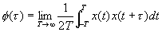
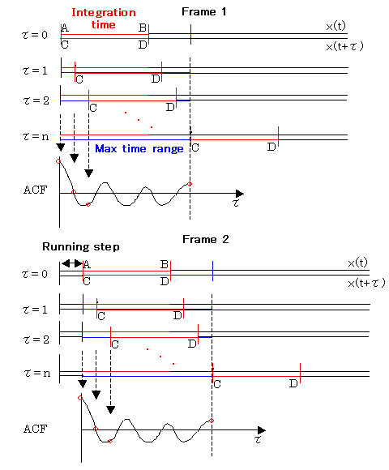

DSSF3 > RA > Reference Manual > Appendix
About the correlation function
The cross-correlation function is used to investigate the similarity of two time series signals x(t) and y(t). Generally, it is expressed as the function of t (delay time) to show the time change of the similarity. Especially, the correlation function that shows the similarity of the signal itself is called the auto-correlation function (ACF). The ACF is a useful tool in signal analysis because it can be used to detect the periodicity of the signal. The ACF is defined as the following equation. In the equation, x(t) is the input signal, t is the delay time, and 2T is the integration time. The running ACF measured in RA is the short term ACF, which is calculated at a short interval with shifting the input data.

In RA and SA, three parameters can be set. The first is Integration time and the second is Max delay time (in RA, it is called Time range). These parameters decide how to calculate the ACF for each data frame. The illustration below shows the calculation process of the running ACF for two successive data frames. A portion of the input signal (C-D) is shifted, multiplied with the original signal (A-B), and summed up to calculate the correlation value at each sample (t). The max delay time decides the time range of t in which the ACF is calculated. When the max delay time is longer than the integration time, the ACF is calculated up to the max delay time. When the max delay time is shorter than the integration time, the ACF is calculated up to the max delay time too. The third parameter, Running step decides the calculation interval of the running ACF.

DSSF3 > RA > Reference Manual > Appendix